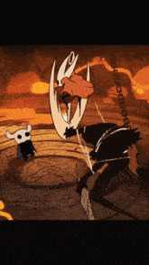
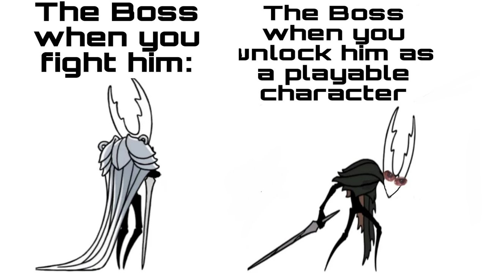
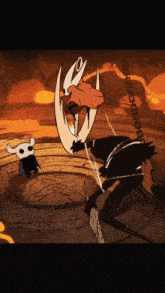
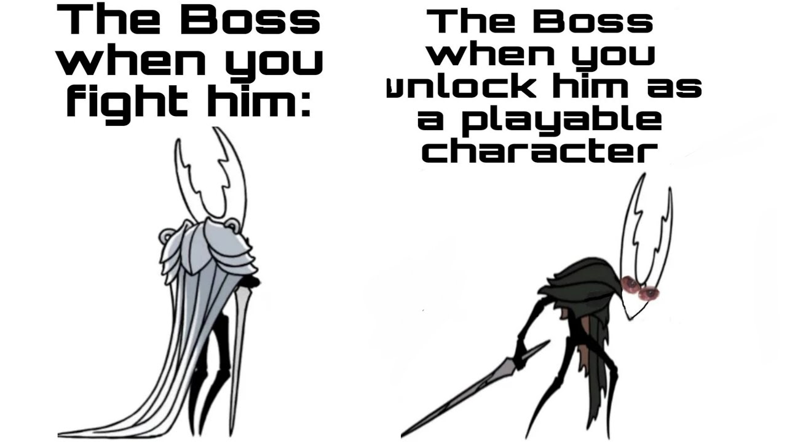

les meilleur jeux sont les jeux indépendant
POURQUOI HOLLOW KNIGHT EST UN BON JEUX?
1:Je vais vous parler de un des meilleurs jeux que j’ai jouer cette année : HOLLOW KNIGHT.
Le jeu a beaucoup de point fort, d’abord son histoire est très intéressante et complète.
Il faudra beaucoup explorer afin je comprendre et relié chaque événement et histoire que les personnes nous racontes .
Les personnages sont tous très bien fait et vous aurez forcément votre petit préféré(comme moi avec Quirel se petit bg). Les boss sont aussi très bien fait comme les plus connus le Hollow Knight ou Radiance et si vous voulez de la difficulté Grim roi des cauchemars est près à vous accueillir (au bout de 3 jour de tryard et beaucoup beaucoup de patience vous allez réussir). Et enfin pour terminer il y a beaucoup de chose à faire entre les combats (Colisée ou même PANTHÉON( bonne chance d’ailleurs et il y a un bug d’invincibilité si vous trouver sa dur)), et aussi tout les dlc gratuit et qui rapporte des boss ou même des objets comme un portail (c’est un tp). Je pense que je vous est assez parler du jeu à vous de le lancer et de découvrir le jeu et n’oubliez pas dans l’ombre nous sommes la lumière.
 

aller sur le jeux


aller sur le jeux